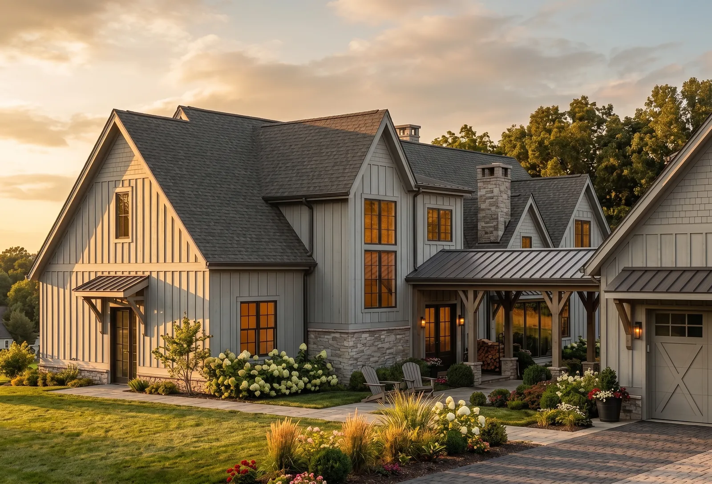
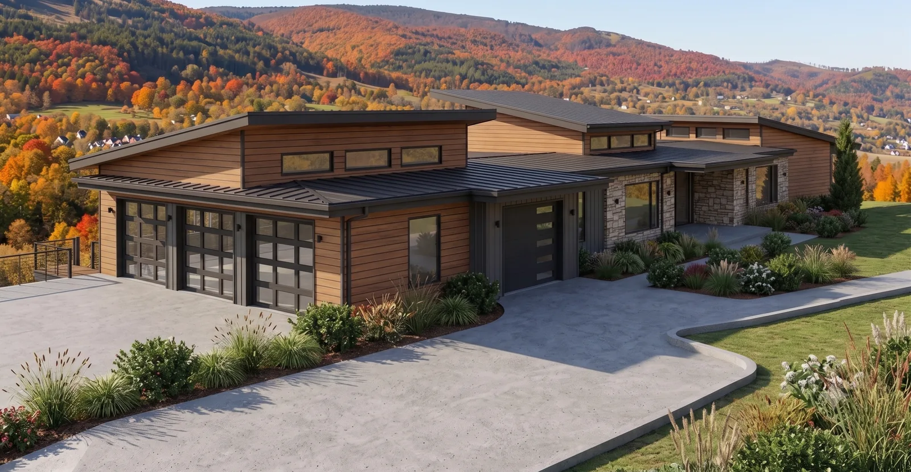
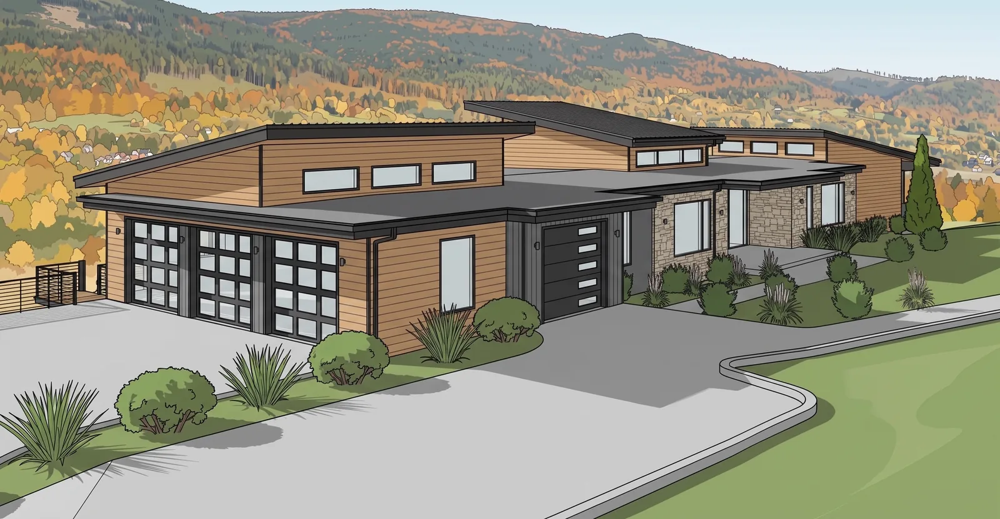
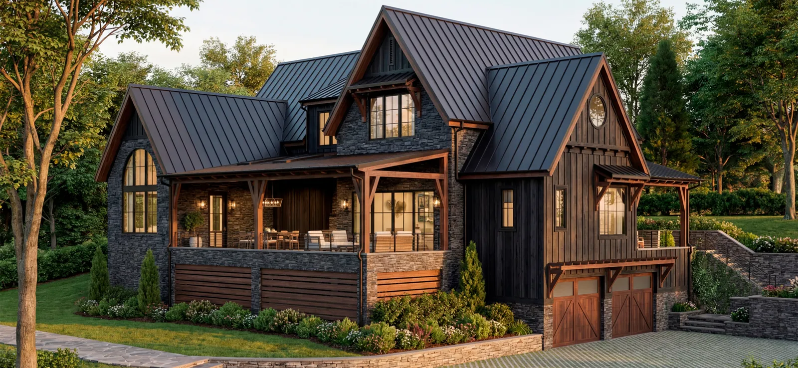
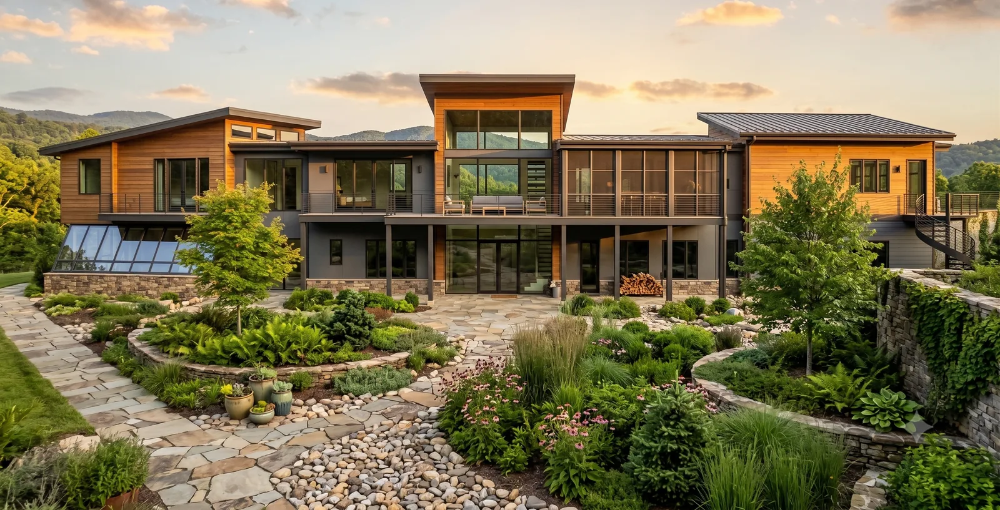
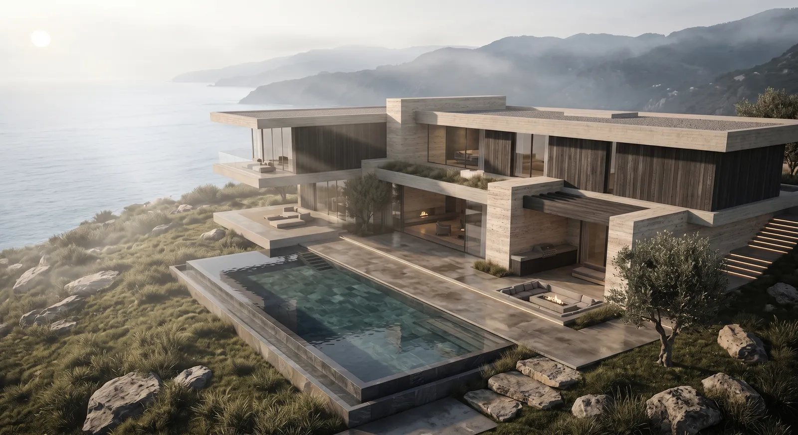
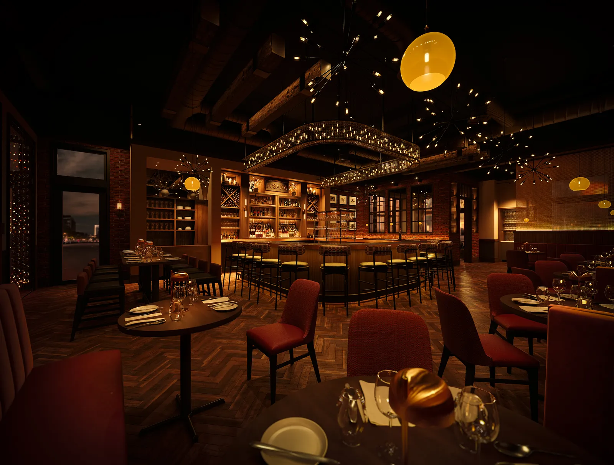

Renderings for Keith Beck Architecture
A short folio of our work, put together for Keith.
- Prepared for
- Keith Beck
- Studio
- Keith Beck Architecture
- Location
- Bigfork, Montana
- Date
- October 2026
- Prepared by
- Alex and Alexandra Lane, Tovizy

Keith,
Your Bear Dance Village, where the Swan River meets Flathead Lake, puts nine condos in three buildings of soda-blasted timber and several kinds of stone, laid out to look added onto over time. That aged character is hard to show on a drawing. Photoreal renderings of your On the Board projects would let a client see the timber, stone and patina before construction starts. Below is work close to yours, and how a first house would go.
Alex LaneTovizy, 3D visualization studio
From the drawing to the finished house.
Drag across the picture. On the left is what we were sent, on the right is what the client saw.


Houses and rooms close to the ones you draw
All projects on tovizy.com
Mountain Modern Residence
Dark timber, stone, standing-seam roofs

Mountain Shed-Roof House
Rear view, rendered from 2D drawings

Mountain Great Room
Reclaimed timber and a wall of glass

Transitional Home
Dark shaker kitchen island, evening light

Coastal Villas
Contemporary stone and timber on a cliff
Walk through it before it is built.
For Posana in Asheville we cut the finished views into a 44-second walkthrough film for the client presentation.

The views, ready for your client.
We can also lay the finished views out as a presentation for your client or investors: a slide deck for the meeting, or a private web page like this one with your name and logo.
The page you are reading is an example.
How a first project goes.
You send one project
Elevations and floor plans as PDF, CAD, Revit or SketchUp, with materials and any reference images.
A free concept and a fixed quote
We make a quick concept image so you can judge the look, and price the full views from their number, the detail and your deadline. Nothing starts until you approve it.
Quote within one business day
You review the first views
Two rounds of revisions are included. Rush delivery in 48 hours is available.
Five to seven business days

Tovizy is the studio of Alex and Alexandra Lane. Since 2013 we have rendered American homes, kitchens and restaurants for the designers and architects who drew them.
Working with this team has transformed how we present our architectural concepts to clients. The photorealistic quality and attention to detail in every render allows our designs to speak for themselves before a single brick is laid.
Douglas Stratton, Stratton Design Group, Asheville, North Carolina
Send one house.
Reply to my email with the elevations and floor plans of a project on the boards. The first concept is free, so you can judge the look before you commit to anything.